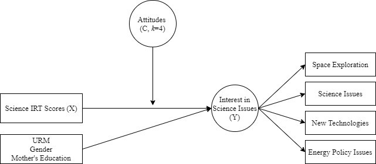
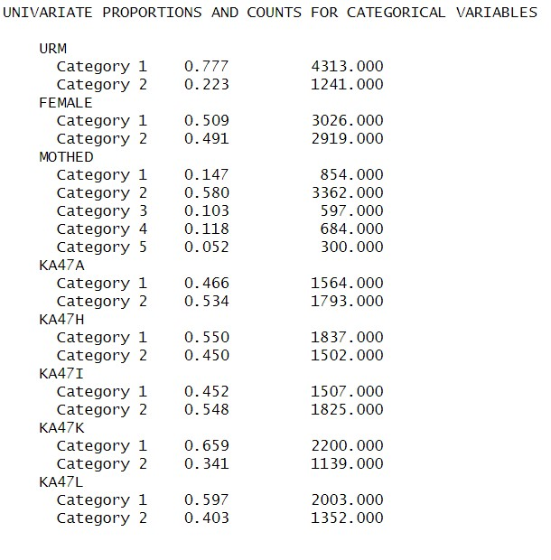
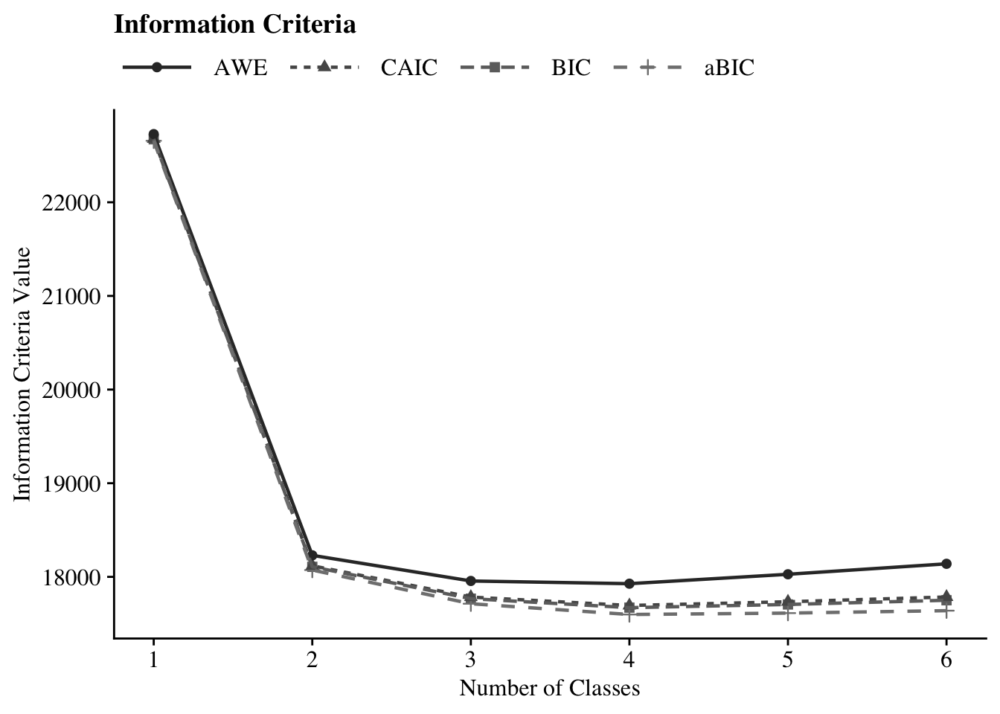
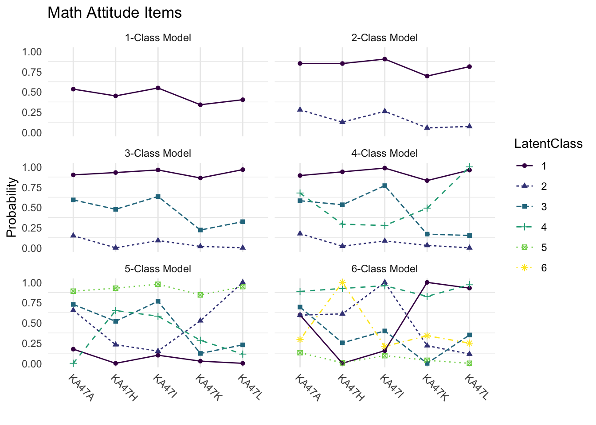
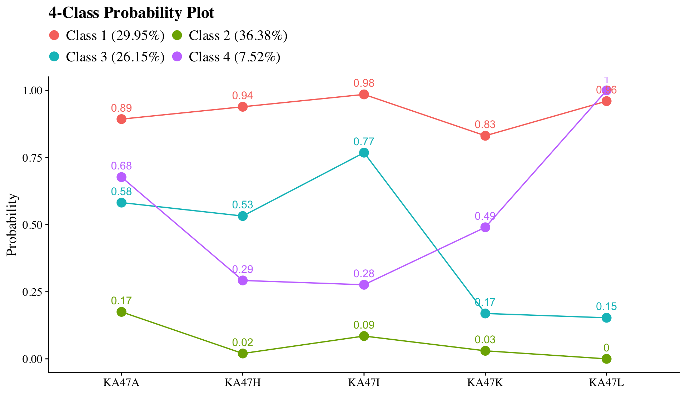
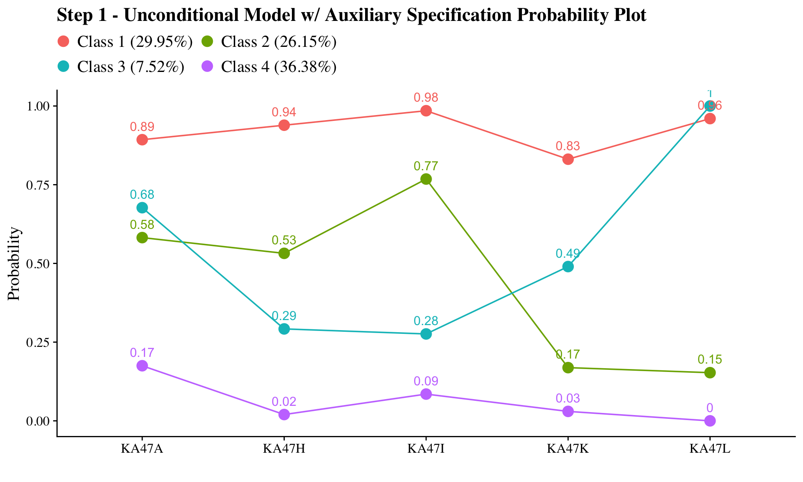
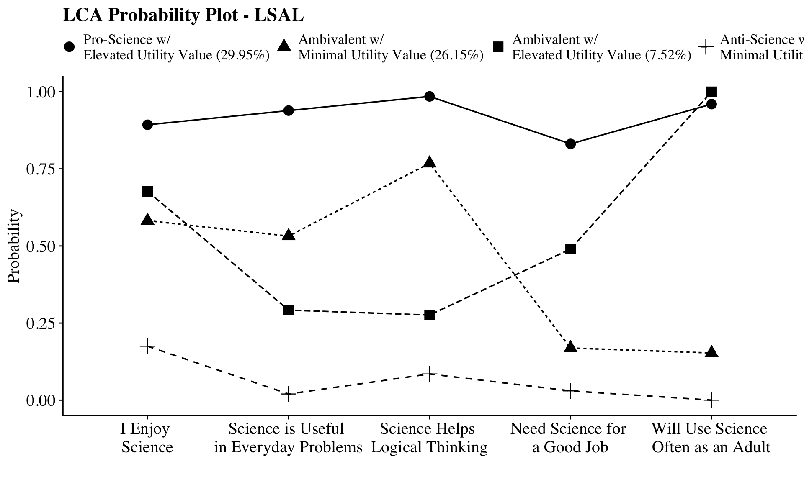
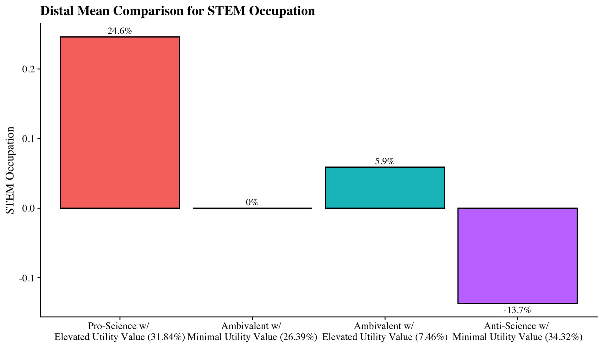
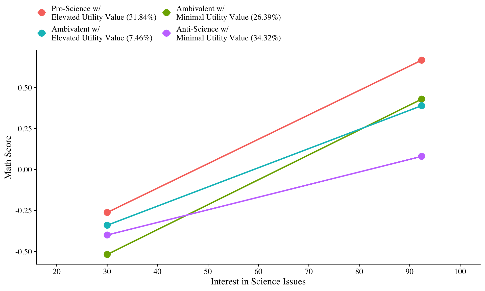

30 Moderation with a Latent Class Variable (Arch, Nylund-Gibson, Ing, 2026)
This appendix walks through the R code to apply moderation with a latent class variable using the MplusAutomation package.
Packages
library(MplusAutomation)
library(tidyverse)
library(here)
library(glue)
library(gt)
library(cowplot)
library(kableExtra)
library(psych)
library(dplyr)
| Name | Description |
|---|---|
| LCA Indicator Variables | |
| KA47A | I Enjoy Science |
| KA47H | Science is Useful in Everyday Problems |
| KA47I | Science Helps Logical Thinking |
| KA47K | Need Science for a Good Job |
| KA47L | Will Use Science Often as an Adult |
| Predictor | |
| ISCIIRT | Science IRT Score (11th Grade) |
| Distal Outcome | |
| KA9B | Space Exploration |
| KA9D | Science Issues |
| KA9G | New Technologies |
| KA9K | Energy Policy Issues |
| Covariates | |
| URM | Under-represented Minority (0 = represented, 1 = under-represented) |
| FEMALE | Sex (0 = male, 1 = female) |
| MOTHED | |
Read in LSAL dataset
30.1 Descriptive Statistics
30.1.1 Descriptive Statistics using R:
Quick view of all the variables in the dataset (excluding CASENUM, COHORT and SCHOOLID`):
Proportion of indicators using R:
# Set up data to find proportions of binary indicators
ds <- data %>%
pivot_longer(KA47A:KA47L, names_to = "Variable")
# Create table of variables and counts
tab <- table(ds$Variable, ds$value)
# Find proportions and round to 3 decimal places
prop <- prop.table(tab, margin = 1) %>%
round(3)
# Combine everything to one table
dframe <- data.frame(Variables=rownames(tab), Proportion=prop[,2], Count=tab[,2])
#remove row names
row.names(dframe) <- NULL
# Format table using `kable()`
dframe %>%
kable(caption = "Descriptive Summary",booktabs = TRUE, escape = FALSE) %>%
kableExtra::kable_styling(latex_options=c("HOLD_position"))
# Format table using `markdown`
gt(dframe) %>%
tab_header(title = md("**LCA Indicator Proportions**"), subtitle = md(" ")) %>%
tab_options(column_labels.font.weight = "bold", row_group.font.weight = "bold") | LCA Indicator Proportions | ||
| Variables | Proportion | Count |
|---|---|---|
| KA47A | 0.534 | 1793 |
| KA47H | 0.450 | 1502 |
| KA47I | 0.548 | 1825 |
| KA47K | 0.341 | 1139 |
| KA47L | 0.403 | 1352 |
30.1.2 Descriptive Statistics using MplusAutomation:
basic_mplus <- mplusObject(
TITLE = "LSAL Descriptive Statistics;",
VARIABLE =
"usevar = FEMALE MOTHED URM ISCIIRT KA9B KA9D KA9G KA9K
KA47A KA47H KA47I KA47K KA47L;
categorical = KA47A KA47H KA47I KA47K KA47L FEMALE MOTHED URM;",
ANALYSIS = "TYPE=basic;",
OUTPUT = "sampstat",
usevariables = colnames(data),
rdata = data)
basic_mplus_fit <- mplusModeler(basic_mplus,
dataout = here("34-lca-moderation","three_step", "LSAL_data.dat"),
modelout = here("34-lca-moderation","three_step","zero.inp"),
check = TRUE, run = TRUE, hashfilename = FALSE)View of descriptive statistics using get_sampstat():
get_sampstat(m.step0.fit)
summary(data)Or, view the .out file:

30.2 Enumeration
This code uses the mplusObject function in the MplusAutomation package and saves all model runs in the mplus_enum folder.
lca_6 <- lapply(1:6, function(k) {
lca_enum <- mplusObject(
TITLE = glue("{k}-Class"),
VARIABLE = glue(
"categorical = KA47A KA47H KA47I KA47K KA47L;
usevar = KA47A KA47H KA47I KA47K KA47L;
classes = c({k});"),
ANALYSIS =
"estimator = mlr;
type = mixture;
starts = 500 100;",
OUTPUT = "sampstat residual tech11 tech14;",
usevariables = colnames(data),
rdata = data)
lca_enum_fit <- mplusModeler(lca_enum,
dataout=glue(here("34-lca-moderation","mplus_enum", "LSAL_data.dat")),
modelout=glue(here("34-lca-moderation","mplus_enum", "c{k}_lsal.inp")),
check=TRUE, run = TRUE, hashfilename = FALSE)
})IMPORTANT: Before moving forward, make sure to open each output document to ensure models were estimated normally. In this example, the last two models (5- and 6-class models) did not produce reliable output and are excluded.
30.2.1 Table of Fit
First, extract data:
output_enum <- readModels(here("34-lca-moderation","mplus_enum"))
enum_extract <- LatexSummaryTable(
output_enum,
keepCols = c(
"Title",
"Parameters",
"LL",
"BIC",
"aBIC",
"BLRT_PValue",
"T11_VLMR_PValue",
"Observations"
),
sortBy = "Title"
)
allFit <- enum_extract %>%
mutate(CAIC = -2* LL + Parameters * (log(Observations)+1)) %>%
mutate(AWE = -2*LL+2*Parameters*(log(Observations)+1.5)) %>%
mutate(SIC = -.5*BIC) %>%
mutate(expSIC = exp(SIC - max(SIC))) %>%
mutate(BF = exp(SIC - lead(SIC))) %>%
mutate(cmPk = expSIC / sum(expSIC)) %>%
dplyr::select(1:5, 9:10, 6:7, 13, 14) %>%
arrange(Parameters)Then, create table using gt() instead of kable():
fit_table <- allFit %>%
gt() %>%
tab_header(title = md("Model Fit Summary Table")) %>%
cols_label(
Title = "Classes",
Parameters = md("Par"),
LL = md("*LL*"),
T11_VLMR_PValue = "VLMR",
BLRT_PValue = "BLRT",
BF = md("BF"),
cmPk = md("*cmPk*")
) %>%
tab_footnote(
footnote = md(
"*Note.* Par = Parameters; *LL* = model log likelihood;
BIC = Bayesian information criterion;
aBIC = sample size adjusted BIC; CAIC = consistent Akaike information criterion;
AWE = approximate weight of evidence criterion;
BLRT = bootstrapped likelihood ratio test p-value;
VLMR = Vuong-Lo-Mendell-Rubin adjusted likelihood ratio test p-value;
*cmPk* = approximate correct model probability."
),
locations = cells_title()
) %>%
fmt_number(c(3:7),
decimals = 2) %>%
sub_missing(1:11,
missing_text = "--") %>%
fmt(
c(8:9, 11),
fns = function(x)
ifelse(x < 0.001, "<.001",
scales::number(x, accuracy = .01))
) %>%
fmt(
10,
fns = function (x)
ifelse(x > 100, ">100",
scales::number(x, accuracy = .01))
) %>%
tab_style(
style = list(
cell_text(weight = "bold")
),
locations = list(cells_body(
columns = BIC,
row = BIC == min(BIC[c(1:nrow(allFit))])
),
cells_body(
columns = aBIC,
row = aBIC == min(aBIC[1:nrow(allFit)])
),
cells_body(
columns = CAIC,
row = CAIC == min(CAIC[1:nrow(allFit)])
),
cells_body(
columns = AWE,
row = AWE == min(AWE[1:nrow(allFit)])
),
cells_body(
columns = cmPk,
row = cmPk == max(cmPk[1:nrow(allFit)])
),
cells_body(
columns = BF,
row = BF > 10),
cells_body(
columns = T11_VLMR_PValue,
row = ifelse(T11_VLMR_PValue < .05 & lead(T11_VLMR_PValue) > .05, T11_VLMR_PValue < .05, NA)),
cells_body(
columns = BLRT_PValue,
row = ifelse(BLRT_PValue < .05 & lead(BLRT_PValue) > .05, BLRT_PValue < .05, NA))
)
)
fit_table| Model Fit Summary Table1 | ||||||||||
| Classes | Par | LL | BIC | aBIC | CAIC | AWE | BLRT | VLMR | BF | cmPk |
|---|---|---|---|---|---|---|---|---|---|---|
| 1-Class | 5 | −11,315.87 | 22,672.34 | 22,656.45 | 22,677.34 | 22,727.94 | – | – | 0.00 | <.001 |
| 2-Class | 11 | −9,009.08 | 18,107.48 | 18,072.53 | 18,118.48 | 18,229.81 | <.001 | <.001 | 0.00 | <.001 |
| 3-Class | 17 | −8,814.56 | 17,767.18 | 17,713.17 | 17,784.18 | 17,956.24 | <.001 | <.001 | 0.00 | <.001 |
| 4-Class | 23 | −8,742.24 | 17,671.26 | 17,598.17 | 17,694.26 | 17,927.04 | <.001 | <.001 | >100 | 1.00 |
| 5-Class | 29 | −8,734.82 | 17,705.15 | 17,613.01 | 17,734.15 | 18,027.66 | <.001 | 0.01 | >100 | <.001 |
| 6-Class | 35 | −8,732.97 | 17,750.16 | 17,638.95 | 17,785.17 | 18,139.40 | 1.00 | 0.48 | – | <.001 |
| 1 Note. Par = Parameters; LL = model log likelihood; BIC = Bayesian information criterion; aBIC = sample size adjusted BIC; CAIC = consistent Akaike information criterion; AWE = approximate weight of evidence criterion; BLRT = bootstrapped likelihood ratio test p-value; VLMR = Vuong-Lo-Mendell-Rubin adjusted likelihood ratio test p-value; cmPk = approximate correct model probability. | ||||||||||
Save table:
30.2.2 Information Criteria Plot
allFit %>%
dplyr::select(2:7) %>%
rowid_to_column() %>%
pivot_longer(`BIC`:`AWE`,
names_to = "Index",
values_to = "ic_value") %>%
mutate(Index = factor(Index,
levels = c ("AWE", "CAIC", "BIC", "aBIC"))) %>%
ggplot(aes(
x = rowid,
y = ic_value,
color = Index,
shape = Index,
group = Index,
lty = Index
)) +
geom_point(size = 2.0) + geom_line(size = .8) +
scale_x_continuous(breaks = 1:nrow(allFit)) +
scale_colour_grey(end = .5) +
theme_cowplot() +
labs(x = "Number of Classes", y = "Information Criteria Value", title = "Information Criteria") +
theme(
text = element_text(family = "serif", size = 12),
legend.text = element_text(family="serif", size=12),
legend.key.width = unit(3, "line"),
legend.title = element_blank(),
legend.position = "top"
)
Save figure:
ggsave(here("34-lca-moderation","figures", "info_criteria.png"), dpi = "retina", bg = "white", height=5, width=7, units="in")30.2.3 Compare Class Solutions
Compare probability plots for \(K = 1:6\) class solutions
model_results <- data.frame()
for (i in 1:length(output_enum)) {
temp <- output_enum[[i]]$parameters$probability.scale %>%
mutate(model = paste0(i, "-Class Model"))
model_results <- rbind(model_results, temp)
}
compare_plot <- model_results %>%
filter(category == 2) %>%
mutate(est = as.numeric(est)) %>%
mutate(LatentClass = as.factor(LatentClass)) %>%
dplyr::select(est, model, LatentClass, param)
compare_plot$param <- fct_inorder(compare_plot$param)
ggplot(
compare_plot,
aes(
x = param,
y = est,
color = LatentClass,
shape = LatentClass,
group = LatentClass,
lty = LatentClass
)
) +
geom_point() +
geom_line() +
scale_colour_viridis_d() +
facet_wrap(~ model, ncol = 2) +
labs(title = "Math Attitude Items", x = " ", y = "Probability") +
theme_minimal() +
theme(
panel.grid.major.y = element_blank(),
axis.text.x = element_text(angle = -45, hjust = 0)
) 
Save figure:
ggsave(here("34-lca-moderation","figures", "compare_kclass_plot.png"), dpi = "retina", bg = "white", height=5, width=7, units="in")30.2.4 4-Class Probability Plot
Use the plot_lca function provided in the folder to plot the item probability plot. This function requires one argument:
- model_name: The name of the Mplus readModels object (e.g., output_enum$c4_lsal.out)
source(here("34-lca-moderation","functions", "plot_lca.R"))
plot_lca(model_name = output_enum$c4_lsal.out)
Save figure:
ggsave(here("34-lca-moderation","figures", "probability_plot.png"), dpi="retina", height=5, width=7, units="in")30.3 LCA Moderation - ML Three-Step
30.3.1 Step 1 - Estimate Unconditional Model w/ Auxiliary Specification
step1 <- mplusObject(
TITLE = "Step 1 - Unconditional Model w/ Auxiliary Specification",
VARIABLE = "categorical = KA47A KA47H KA47I KA47K KA47L;
usevar = KA47A KA47H KA47I KA47K KA47L;
classes = c(4);
AUXILIARY = FEMALE MOTHED ISCIIRT KA9B KA9D KA9G KA9K URM;",
ANALYSIS =
"estimator = mlr;
type = mixture;
starts = 0;
OPTSEED = 375590;",
SAVEDATA =
"File=savedata.dat;
Save=cprob;",
OUTPUT = "sampstat residual tech11 tech14 svalues(1 3 4 2)", # `svalues` used here to relabel classes
usevariables = colnames(data),
rdata = data)
step1_fit <- mplusModeler(step1,
dataout=here("34-lca-moderation","three_step", "new.dat"),
modelout=here("34-lca-moderation","three_step", "one.inp") ,
check=TRUE, run = TRUE, hashfilename = FALSE)Note: Ensure that the classes did not shift during this step (i.g., Class 1 in the enumeration run is now Class 4). Evaluate output and compare the class counts and proportions for the latent classes. Using the OPTSEED function ensures replication of the best loglikelihood value run.
Plot LCA
| Latent Class | Label |
|---|---|
| 1 | Pro-Science with Elevated Utility Value |
| 2 | Ambivalent with Minimal Utility Value |
| 3 | Ambivalent with Elevated Utility Value |
| 4 | Anti-Science with Minimal Utility Value |
source(here("34-lca-moderation","functions", "plot_lca.R"))
output_one <- readModels(here("34-lca-moderation","three_step", "one.out"))
plot_lca(model_name = output_one)
Check that log-likelihood values are the same
output_one <- readModels(here("34-lca-moderation","three_step", "one.out"))
output_one$summaries$LL
#> [1] -8742.238
enumeration_c4 <- readModels(here("34-lca-moderation","mplus_enum", "c4_lsal.out"))
enumeration_c4$summaries$LL
#> [1] -8742.238After selecting the latent class model, add class labels to item probability plot using the plot_lca_labels function. This function requires three arguments:
-
model_name: The MplusreadModelsobject (e.g.,output_enum$c4_lsal.out) -
item_labels: The item labels for x-axis (e.g.,c(“Enjoy”,“Useful”,“Logical”,“Job”,“Adult”)) -
class_labels: The class labels (e.g., c(“Pro-Science w/ Elevated Utility Value”, “Ambivalent w/ Minimal Utility Value”, “Ambivalent w/ Elevated Utility Value”, “Anti-Science w/ Minimal Utility Value”))
Note: Use \n to add a return if the label is lengthy.
source(here("34-lca-moderation","functions","plot_lca_labels.R"))
# Read in output from step 1.
output_one <- readModels(here("34-lca-moderation","three_step", "one.out"))
# Plot Title
title <- "LCA Probability Plot - LSAL"
#Identify item and class labels (Make sure they are in the order presented in the plot above)
item_labels <- c(
"I Enjoy \nScience",
"Science is Useful \nin Everyday Problems",
"Science Helps \nLogical Thinking",
"Need Science for \na Good Job",
"Will Use Science \nOften as an Adult"
)
class_labels <- c(
"Pro-Science w/ \nElevated Utility Value",
"Ambivalent w/ \nMinimal Utility Value",
"Ambivalent w/ \nElevated Utility Value",
"Anti-Science w/ \nMinimal Utility Value"
)
# Plot LCA plot
plot_lca_labels(model_name = output_one, item_labels, class_labels, title)
# Save
ggsave(here("34-lca-moderation","figures", "final_probability_plot_mod.png"), dpi = "retina", bg = "white", height=7, width=10, units="in")30.3.2 Step 2 - Determine Measurement Error
Extract logits for the classification probabilities for the most likely latent class
logit_cprobs <- as.data.frame(output_one$class_counts$logitProbs.mostLikely)
logit_cprobs
#> 1 2 3 4
#> 1 8.959 6.319 5.092 0
#> 2 -0.610 2.237 -0.819 0
#> 3 4.497 4.352 6.199 0
#> 4 -8.219 -2.150 -13.705 0Extract saved dataset from step one
savedata <- as.data.frame(output_one$savedata) %>%
rename(N = MLCC) #Rename the column in savedata named "MLCC" and change to "N"Check variable names in savedata (Mplus will cut off variable names that are longer than 8 characters)
names(savedata)
#> [1] "KA47A" "KA47H" "KA47I" "KA47K" "KA47L"
#> [6] "FEMALE" "MOTHED" "ISCIIRT" "KA9B" "KA9D"
#> [11] "KA9G" "KA9K" "URM" "CPROB1" "CPROB2"
#> [16] "CPROB3" "CPROB4" "N"30.3.3 Step 3 - Add Auxiliary Variables
To test for moderation, an overall test of equivalence of the regression of science issues on science ability across the latent classes was conducted using the omnibus Wald test. This is done in MplusAutomation using the MODELTEST command shown below. Mplus can run only one Wald test at a time. After evaluating the first Wald test (slopes), re-run step three for the second Wald test (intercepts). Pairwise comparisons can be tested simultaneously, but should be evaluated after significant Wald tests.
step3mod <- mplusObject(
TITLE = "Step 3 - LCA Moderation",
VARIABLE =
"USEVAR = FEMALE MOTHED ISCIIRT URM KA9B KA9D KA9G KA9K N;
classes = c(4);
nominal = N;",
ANALYSIS =
"estimator = mlr;
type = mixture;
starts = 500 100;",
DEFINE =
"ISCIIRT = ISCIIRT/10;
Center ISCIIRT (GRANDMEAN);",
MODEL =
glue("
!Covariates: URM FEMALE MOTHED ISCIIRT
!Distal: ISSUES
%OVERALL%
ISSUES by KA9B KA9D KA9G KA9K;
ISSUES on FEMALE MOTHED URM;
ISSUES on ISCIIRT;
%C#1%
[N#1@{logit_cprobs[1,1]}];
[N#2@{logit_cprobs[1,2]}];
[N#3@{logit_cprobs[1,3]}];
[ISSUES] (B01); ! conditional distal mean
ISSUES; ! conditional distal variance (freely estimated)
ISSUES on ISCIIRT(B11);! conditional slope (class 1)
%C#2%
[N#1@{logit_cprobs[2,1]}];
[N#2@{logit_cprobs[2,2]}];
[N#3@{logit_cprobs[2,3]}];
[ISSUES@0] (B02);
ISSUES;
ISSUES on ISCIIRT(B12);
%C#3%
[N#1@{logit_cprobs[3,1]}];
[N#2@{logit_cprobs[3,2]}];
[N#3@{logit_cprobs[3,3]}];
[ISSUES] (B03);
ISSUES;
ISSUES on ISCIIRT(B13);
%C#4%
[N#1@{logit_cprobs[4,1]}];
[N#2@{logit_cprobs[4,2]}];
[N#3@{logit_cprobs[4,3]}];
[ISSUES] (B04);
ISSUES;
ISSUES on ISCIIRT(B14);"),
MODELTEST = "
! can run only a single Omnibus test per model
! Omnibus test 1 (Slope)
B11=B12;
B12=B13;
B13=B14;
! Omnibus test 2 (Intercept)
!B01=B03;
!B03=B04;",
MODELCONSTRAINT =
"NEW (slope12, slope13, slope14, slope23, slope24, slope34,
int13, int14, int34);
slope12=B11-B12; ! Test slope differences
slope13=B11-B13;
slope14=B11-B14;
slope23=B12-B13;
slope24=B12-B14;
slope34=B13-B14;
int13=B01-B03; ! Test intercept differences
int14=B01-B04;
int34=B03-B04;",
usevariables = colnames(savedata),
rdata = savedata)
step3mod_fit <- mplusModeler(step3mod,
dataout=here("34-lca-moderation","three_step", "Step3.dat"),
modelout=here("34-lca-moderation","three_step", "three_slope.inp"),
check=TRUE, run = TRUE, hashfilename = FALSE)Rerun model with different model test:
# Update the model test by overwriting string
step3mod$MODELTEST <- "B01=B03; B03=B04"
# Then run it again
mplusModeler(step3mod,
dataout=here("34-lca-moderation","three_step", "Step3.dat"),
modelout=here("34-lca-moderation","three_step", "three_intercept.inp"),
check=TRUE, run = TRUE, hashfilename = FALSE)Compare Step 1 classes and Step 3 classes
output_one <- readModels(here("34-lca-moderation","three_step", "one.out"))
output_one$class_counts$modelEstimated
#> class count proportion
#> 1 1 1007.4747 0.29949
#> 2 2 879.5794 0.26147
#> 3 3 253.0090 0.07521
#> 4 4 1223.9368 0.36383
output_three <- readModels(here("34-lca-moderation","three_step", "three_slope.out"))
output_three$class_counts$modelEstimated
#> class count proportion
#> 1 1 824.8687 0.31836
#> 2 2 683.8538 0.26393
#> 3 3 193.1539 0.07455
#> 4 4 889.1236 0.34316NOTE: If there are notable differences between class formation in the Step 1 and the Step 3 models, it means there are one of more covariates included in the Step 3 model that may be sources of unaccounted-for DIF
30.3.3.1 Wald Test Table
This is testing if there is a relation between the latent class variable and the distal outcome.
Note: There are two outputs, each containing separate Wald tests (one for slope and one for intercept). However, other than the Wald test, the outputs are identical. Either can be used for subsequent code.
# Make a Wald table function
wald_table <- function(mplus_model, table_title) {
# Read the model
model_output <- mplus_model
# Extract information as data frame
wald <- as.data.frame(model_output[["summaries"]]) %>%
dplyr::select(WaldChiSq_Value:WaldChiSq_PValue) %>%
mutate(WaldChiSq_DF = paste0("(", WaldChiSq_DF, ")")) %>%
unite(wald_test, WaldChiSq_Value, WaldChiSq_DF, sep = " ") %>%
rename(pval = WaldChiSq_PValue) %>%
mutate(pval = ifelse(pval<0.001, paste0("<.001*"),
ifelse(pval<0.05, paste0(scales::number(pval, accuracy = .001), "*"),
scales::number(pval, accuracy = .001))))
# Create the gt table
wald %>%
gt() %>%
tab_header(
title = table_title) %>%
cols_label(
wald_test = md("Wald Test (*df*)"),
pval = md("*p*-value")) %>%
cols_align(align = "center") %>%
opt_align_table_header(align = "left") %>%
gt::tab_options(table.font.names = "serif")
}Use wald_table function
output_three_slope <- readModels(here("34-lca-moderation","three_step", "three_slope.out"))
output_three_intercept <- readModels(here("34-lca-moderation","three_step", "three_intercept.out"))
wald_table(output_three_slope, "Wald Test Distal Means (Slope)")| Wald Test Distal Means (Slope) | |
| Wald Test (df) | p-value |
|---|---|
| 11.003 (3) | 0.012* |
wald_table(output_three_intercept, "Wald Test Distal Means (Math IRT Scores)")| Wald Test Distal Means (Math IRT Scores) | |
| Wald Test (df) | p-value |
|---|---|
| 205.616 (2) | <.001* |
30.3.3.2 Table of Slope and Intercept Values Across Classes
modelParams <- readModels(here("34-lca-moderation","three_step", "three_intercept.out"))
# Extract information as data frame
values <- as.data.frame(modelParams[["parameters"]][["unstandardized"]]) %>%
filter(param %in% c("ISSUES", "ISCIIRT"),
paramHeader != "Residual.Variances") %>%
mutate(param = str_replace(param,
pattern = "ISCIIRT", replacement = "Slope"),
param = str_replace(param,
pattern = "ISSUES", replacement = "Intercept")) %>%
mutate(LatentClass = sub("^","Class ", LatentClass)) %>%
dplyr::select(!paramHeader) %>%
mutate(se = paste0("(", format(round(se,2), nsmall =2), ")")) %>%
unite(estimate, est, se, sep = " ") %>%
dplyr::select(-est_se) %>%
mutate(pval = ifelse(pval<0.001, paste0("<.001*"),
ifelse(pval<0.05, paste0(scales::number(pval, accuracy = .001), "*"),
scales::number(pval, accuracy = .001))))
# Create table
values %>%
gt(groupname_col = "LatentClass", rowname_col = "param") %>%
tab_header(
title = "Slope and Intercept Values Across Science Attitudes Classes") %>%
cols_label(
estimate = md("Estimate (*se*)"),
pval = md("*p*-value")) %>%
sub_values(values = "999.000", replacement = "-") %>%
sub_missing(1:3,
missing_text = "") %>%
cols_align(align = "center") %>%
opt_align_table_header(align = "left") %>%
gt::tab_options(table.font.names = "serif")| Slope and Intercept Values Across Science Attitudes Classes | ||
| Estimate (se) | p-value | |
|---|---|---|
| Class 1 | ||
| Slope | 0.149 (0.01) | <.001* |
| Intercept | 0.246 (0.03) | <.001* |
| Class 2 | ||
| Slope | 0.152 (0.02) | <.001* |
| Intercept | 0 (0.00) | - |
| Class 3 | ||
| Slope | 0.117 (0.03) | <.001* |
| Intercept | 0.059 (0.05) | 0.269 |
| Class 4 | ||
| Slope | 0.077 (0.02) | <.001* |
| Intercept | -0.137 (0.03) | <.001* |
30.3.3.3 Table of Distal Outcome Differences
modelParams <- readModels(here("34-lca-moderation","three_step", "three_intercept.out"))
# Extract information as data frame
diff1 <- as.data.frame(modelParams[["parameters"]][["unstandardized"]]) %>%
filter(grepl("INT", param)) %>%
dplyr::select(param:pval) %>%
mutate(se = paste0("(", format(round(se,2), nsmall =2), ")")) %>%
unite(estimate, est, se, sep = " ") %>%
mutate(param = str_remove(param, "INT"),
param = as.numeric(param)) %>%
separate(param, into = paste0("Group", 1:2), sep = 1) %>%
mutate(class = paste0("Class ", Group1, " vs ", Group2)) %>%
dplyr::select(class, estimate, pval) %>%
mutate(pval = ifelse(pval<0.001, paste0("<.001*"),
ifelse(pval<0.05, paste0(scales::number(pval, accuracy = .001), "*"),
scales::number(pval, accuracy = .001))))
# Create table
diff1 %>%
gt() %>%
tab_header(
title = "Distal Outcome Differences") %>%
cols_label(
class = "Class",
estimate = md("Mean Difference (*se*)"),
pval = md("*p*-value")) %>%
sub_missing(1:3,
missing_text = "") %>%
cols_align(align = "center") %>%
opt_align_table_header(align = "left") %>%
gt::tab_options(table.font.names = "serif")| Distal Outcome Differences | ||
| Class | Mean Difference (se) | p-value |
|---|---|---|
| Class 1 vs 3 | 0.187 (0.05) | <.001* |
| Class 1 vs 4 | 0.383 (0.03) | <.001* |
| Class 3 vs 4 | 0.196 (0.05) | <.001* |
30.3.3.4 Table of Slope Differences
modelParams <- readModels(here("34-lca-moderation","three_step", "three_intercept.out"))
# Extract information as data frame
diff2 <- as.data.frame(modelParams[["parameters"]][["unstandardized"]]) %>%
filter(grepl("SLOPE", param)) %>%
dplyr::select(param:pval) %>%
mutate(se = paste0("(", format(round(se,2), nsmall =2), ")")) %>%
unite(estimate, est, se, sep = " ") %>%
mutate(param = str_remove(param, "SLOPE"),
param = as.numeric(param)) %>%
separate(param, into = paste0("Group", 1:2), sep = 1) %>%
mutate(class = paste0("Class ", Group1, " vs ", Group2)) %>%
dplyr::select(class, estimate, pval) %>%
mutate(pval = ifelse(pval<0.001, paste0("<.001*"),
ifelse(pval<0.05, paste0(scales::number(pval, accuracy = .001), "*"),
scales::number(pval, accuracy = .001))))
# Create table
diff2 %>%
gt() %>%
tab_header(
title = "Slope Differences") %>%
cols_label(
class = "Class",
estimate = md("Mean (*se*)"),
pval = md("*p*-value")) %>%
sub_missing(1:3,
missing_text = "") %>%
cols_align(align = "center") %>%
opt_align_table_header(align = "left") %>%
gt::tab_options(table.font.names = "serif")| Slope Differences | ||
| Class | Mean (se) | p-value |
|---|---|---|
| Class 1 vs 2 | -0.003 (0.03) | 0.924 |
| Class 1 vs 3 | 0.032 (0.04) | 0.388 |
| Class 1 vs 4 | 0.072 (0.02) | 0.001* |
| Class 2 vs 3 | 0.035 (0.04) | 0.419 |
| Class 2 vs 4 | 0.075 (0.03) | 0.019* |
| Class 3 vs 4 | 0.04 (0.04) | 0.285 |
30.3.3.5 Table of Covariates
modelParams <- readModels(here("34-lca-moderation","three_step", "three_intercept.out"))
# Extract information as data frame
cov <- as.data.frame(modelParams[["parameters"]][["unstandardized"]]) %>%
filter(param %in% c("FEMALE", "MOTHED", "URM")) %>%
mutate(param = str_replace(param, "FEMALE", "Gender"),
param = str_replace(param, "MOTHED", "Mother's Education"),
param = str_replace(param, "URM", "Underrepresented Minority"))%>%
mutate(LatentClass = sub("^","Class ", LatentClass)) %>%
dplyr::select(!paramHeader) %>%
mutate(se = paste0("(", format(round(se,2), nsmall =2), ")")) %>%
unite(estimate, est, se, sep = " ") %>%
select(param, estimate, pval) %>%
distinct(param, .keep_all=TRUE) %>%
mutate(pval = ifelse(pval<0.001, paste0("<.001*"),
ifelse(pval<0.05, paste0(scales::number(pval, accuracy = .001), "*"),
scales::number(pval, accuracy = .001))))
# Create table
cov %>%
gt(groupname_col = "LatentClass", rowname_col = "param") %>%
tab_header(
title = "Relations Between the Covariates and Distal Outcome") %>%
cols_label(
estimate = md("Estimate (*se*)"),
pval = md("*p*-value")) %>%
sub_missing(1:3,
missing_text = "") %>%
sub_values(values = c(999.000), replacement = "-") %>%
cols_align(align = "center") %>%
opt_align_table_header(align = "left") %>%
gt::tab_options(table.font.names = "serif")| Relations Between the Covariates and Distal Outcome | ||
| Estimate (se) | p-value | |
|---|---|---|
| Gender | -0.16 (0.02) | <.001* |
| Mother's Education | 0.004 (0.01) | 0.677 |
| Underrepresented Minority | 0.043 (0.02) | 0.072 |
30.3.3.6 Plot Distal Outcome
modelParams <- readModels(here("34-lca-moderation","three_step", "three_intercept.out"))
# Extract class size
c_size <- as.data.frame(modelParams[["class_counts"]][["modelEstimated"]][["proportion"]]) %>%
rename("cs" = 1) %>%
mutate(cs = round(cs*100, 2))
# Class labels
class_labels <- c(
"Pro-Science w/ \nElevated Utility Value",
"Ambivalent w/ \nMinimal Utility Value",
"Ambivalent w/ \nElevated Utility Value",
"Anti-Science w/ \nMinimal Utility Value"
)
# Keep this code if you want a generic label for the classes
#c_size_val <- paste0("C", 1:nrow(c_size), glue(" ({c_size[1:nrow(c_size),]}%)"))
# Otherwise use this:
c_size_val <- paste0(class_labels, glue(" ({c_size[1:nrow(c_size),]}%)"))
# Extract information as data frame
estimates <- as.data.frame(modelParams[["parameters"]][["unstandardized"]]) %>%
filter(paramHeader == "Intercepts") %>%
dplyr::select(param, est, se) %>%
filter(param == "ISSUES") %>% # Distal Outcome Name
mutate(across(c(est, se), as.numeric)) %>%
mutate(LatentClass = c_size_val)
# Add labels (NOTE: You must change the labels to match the significance testing!!)
#value_labels <- paste0(estimates$est, c("a"," bc"," abd"," cd"))
estimates$LatentClass <- fct_inorder(estimates$LatentClass)
# Plot bar graphs
estimates %>%
ggplot(aes(x = LatentClass, y = est, fill = LatentClass)) +
geom_col(position = "dodge", color = "black") +
# Dynamic text labels
geom_text(
aes(
label = paste0(round(est * 100, 2), "%"),
vjust = ifelse(est >= 0, -0.5, 1.5)
),
family = "serif",
size = 4,
position = position_dodge(1)
) +
labs(
y = "STEM Occupation",
x = "",
title = "Distal Mean Comparison for STEM Occupation"
) +
theme_cowplot() +
theme(
text = element_text(family = "serif"),
legend.position = "none"
)
# Save plot
ggsave(here("34-lca-moderation","figures","distal_plot.jpg"), dpi = "retina", bg = "white", width=13, height = 7, units="in") 30.3.3.7 Plot Slopes
modelParams <- readModels(here("34-lca-moderation","three_step", "three_intercept.out"))
# Minimum and Maximum Values
desc <- as.data.frame(modelParams$sampstat$univariate.sample.statistics) %>%
rownames_to_column("Variables")
# Class Sizes
c_size_val <- paste0(class_labels, glue(" ({c_size[1:nrow(c_size),]}%)"))
# Select min amd max values of covariate
xmin <- desc %>%
filter(Variables == "ISCIIRT") %>%
dplyr::select(Minimum) %>%
as.numeric()
xmax <- desc %>%
filter(Variables == "ISCIIRT") %>%
dplyr::select(Maximum) %>%
as.numeric()
# Add slope and intercept, Min and Max values
line <- as.data.frame(modelParams$parameters$unstandardized) %>%
filter(str_detect(paramHeader, 'ON|Inter'),
str_detect(param, 'ISCIIRT|ISSUES')) %>% # ISCIIRT is X and ISSUES is Y
unite("param", paramHeader:param, remove = TRUE) %>%
mutate(param = replace(param,agrep(".ON",param),"slope"),
param = replace(param,agrep("Inter", param), "intercept"),
LatentClass = factor(LatentClass, labels = c_size_val)) %>% # Uses previous `c_size_val` object that contains the class labels
dplyr::select(param, est, LatentClass) %>%
pivot_wider(names_from = param, values_from = est) %>%
add_column(x_max = xmax,
x_min = xmin)
# Add column with y values
plot_data <- line %>%
mutate(y_min = (slope*xmin) + intercept,
y_max = (slope*xmax) + intercept) %>%
dplyr::select(-slope, -intercept) %>%
pivot_longer(-LatentClass,
names_to = c("xvalues", "yvalues"),
names_sep="_" ) %>%
pivot_wider(names_from = xvalues, values_from = value) %>%
dplyr::select(-yvalues)
# un-center and un-scale so values on x-axis are on the original scale
sampstat <- readModels(here("34-lca-moderation","three_step", "zero.out"))
desc <- as.data.frame(sampstat$sampstat$univariate.sample.statistics) %>%
rownames_to_column("Variables")
mean <- desc %>%
filter(Variables == "ISCIIRT") %>%
select(Mean) %>%
as.numeric()
uncentered_data <- plot_data %>% mutate(x = x*10 + mean)
# Plot
uncentered_data %>%
ggplot(aes(
x = x,
y = y,
color = LatentClass,
group = LatentClass
)) +
geom_point(size = 4) +
geom_line(linewidth = 1) +
labs(
x = "Interest in Science Issues",
y = "Math Score"
) +
scale_x_continuous(n.breaks = 10, limits = c(20, 100)) +
theme_cowplot() +
theme(
text = element_text(family = "serif"),
legend.position = "top",
legend.title = element_blank()
) +
guides(color = guide_legend(nrow = 2, byrow = TRUE))
# Save
ggsave(here("34-lca-moderation","figures","slope_plot.jpg"), dpi = "retina", bg = "white", width=11, height = 7, units="in")